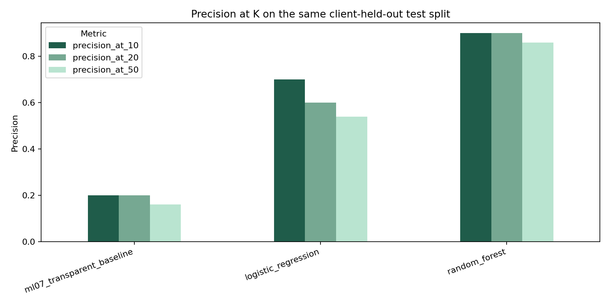
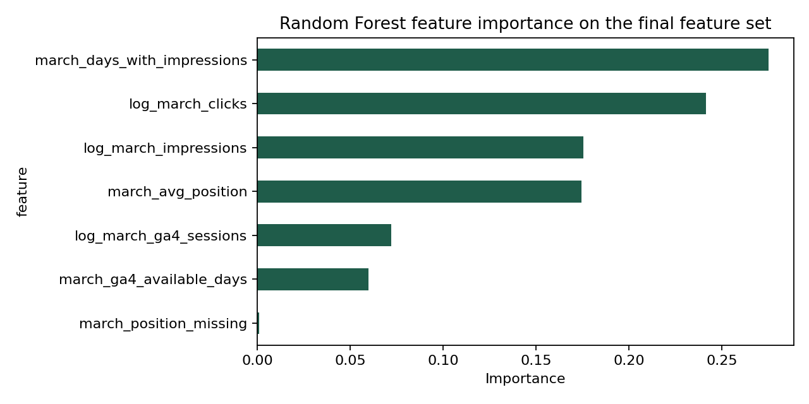

Capstone Report — Refresh / Content Opportunity Scoring
- Author: Soumana Dama
- Lane: Refresh / Content Opportunity Scoring
- Repo: Damasoumana1/flyrank-ml-internship-july2026
- Date: 27 August 2026
0. Abstract
This capstone asks whether observed search-performance signals can rank webpages that deserve content-refresh review using only information available at decision time. The analysis uses the FlyRank internship warehouse, aggregating March 2026 performance into 176,737 pseudonymized content records and using April 2026 only to construct an observed future-decline proxy. A transparent ML-07 rule is compared with Logistic Regression and a Random Forest under the same client-group holdout split. On the held-out test rows, the Random Forest reached Precision@50 of 0.86 versus 0.16 for the baseline, with a test base rate of 0.4538. The resulting queue is decision support for a human content reviewer, not a causal claim about refresh outcomes and not a prediction of Google's ranking algorithm.
1. Problem framing
The operational decision is which pseudonymized content records should a content or SEO reviewer inspect first. The output is a ranked queue containing a priority score, one operational reason code, and one recommended action. A reviewer can use the queue to allocate limited editorial attention: prioritize a high-priority review, defer a lower-priority item, or monitor it without taking an automatic publishing action.
A wrong call has asymmetric costs. Prioritizing a stable page can waste review capacity, while failing to surface a genuinely declining page can delay investigation. Machine learning is useful here only if several noisy search-performance signals provide a more useful ranking than a rule that is difficult to maintain manually. The project therefore treats the rule as a necessary baseline and evaluates whether a learned model adds measured ranking value on unseen client groups.
The research question is deliberately narrow: Can observed search-performance signals rank webpages that deserve content-refresh review, using only information available at decision time? The answer supported by this experiment is limited to the observed March-to-April warehouse frame and the stated validation protocol.
2. Data safety
The analysis used the gated FlyRank internship warehouse and only the March and April partitions of fact_content_daily_performance. Daily records were aggregated in DuckDB before being brought into pandas or scikit-learn. The modeling grain is one row per client_hash_id × content_hash_id pair, with March features and an April outcome proxy.
March is the decision window. April is strictly an outcome window and is not available to the model at scoring time. The target is defined as is_declining_next30 = 1 when April impressions are less than 80% of March impressions. This is an operational proxy for observed month-over-month decline; it is not a human editorial label and does not establish that a refresh would improve performance.
The following table records the public-safety treatment of the main fields.
| Field or field family | Role in this analysis | Treatment and reason |
|---|---|---|
client_hash_id |
Grouping and holdout variable | Used to prevent client overlap between train and test; never used as a model feature. |
content_hash_id |
Join key and queue reference | Used to join March and April aggregates and identify pseudonymized queue rows; never used as a model feature. |
| March impressions, clicks, average position, active days | Model inputs | Aggregated and transformed because they are available at the decision time. |
| March GA4 sessions and GA4-available days | Model inputs | Included only as March aggregates; unavailable or missing values are handled by the pipeline. |
| April impressions | Outcome construction only | Excluded from the feature matrix because it belongs to the future outcome window. |
is_declining_next30 |
Target only | Excluded from the feature matrix because it is derived from April impressions. |
| Names, domains, URLs, private queries and credentials | Excluded | No client-identifying information is included in the public report, figures or repository outputs. |
A deliberately constructed future-derived leakage feature was tested separately. It produced Precision@50 of 1.00, while the honest Random Forest produced 0.86, and the notebook confirms that the leakage column was removed from the honest feature list. This attack is retained as evidence that the evaluation harness can expose a label-derived feature rather than silently accepting it.
3. Baseline
The baseline reproduces the transparent prioritization logic developed in ML-07. A record receives a volume score when March impressions are at least 100. When the record also has an observed average position greater than 0 and at most 10, the volume score is doubled. The rule is interpreted as a review-priority heuristic and a visibility-protection signal; it is not treated as a probability and does not claim that poor position predicts decline.
The baseline is fair because it uses the same March-only inputs, the same held-out test rows and the same ranking metrics as the learned models. Its measured performance is shown alongside the models below.
| Method | ROC-AUC | Average Precision | Precision@10 | Precision@20 | Precision@50 |
|---|---|---|---|---|---|
| ML-07 transparent baseline | 0.4747 | 0.4227 | 0.20 | 0.20 | 0.16 |
| Logistic Regression | 0.5792 | 0.5064 | 0.70 | 0.60 | 0.54 |
| Random Forest | 0.5888 | 0.5303 | 0.90 | 0.90 | 0.86 |
The baseline is weaker than the test base rate at its reported top-K cutoffs. This is an observed result on this split, not evidence that the rule is universally poor; it indicates that this particular fixed heuristic did not order the held-out rows effectively under the capstone protocol.
4. Model / analysis
The model target is the operational future-decline proxy defined above: April impressions are below 80% of March impressions. The feature set contains seven March-only variables. Log transforms are used for the non-negative volume variables, and a binary missingness indicator is retained for average position.
| Model feature | Construction |
|---|---|
log_march_impressions |
log1p of March impressions |
log_march_clicks |
log1p of March clicks |
march_avg_position |
March average position, with missing values imputed inside the pipeline |
march_days_with_impressions |
Count of March days with positive impressions |
log_march_ga4_sessions |
log1p of March GA4 sessions |
march_ga4_available_days |
Count of March days with GA4 data available |
march_position_missing |
Indicator that March average position is missing |
Two supervised pipelines were trained. Logistic Regression provides a readable linear reference, while the Random Forest tests whether nonlinear interactions among the same signals add ranking value. Each pipeline applies median imputation and standard scaling inside the training pipeline. The Random Forest uses 300 trees, maximum depth 8, minimum leaf size 20, balanced class weights, random seed 42 and parallel execution. The baseline and both models use the same GroupShuffleSplit test partition.
The analysis intentionally does not use April columns, the target, target siblings, client or content identifiers, existing product flags, or any future-window aggregate as a model feature. The leakage attack described in Section 2 is a diagnostic experiment, not part of the honest model.
5. Evaluation

The feature frame contains 176,737 rows. A single client-group holdout reserves 20% of the rows for testing, resulting in 138,309 training rows and 38,428 test rows. The split contains 37 pseudonymized client groups in training and 10 in testing. The measured positive rate is 0.5319 in the full joined frame and 0.4538 in the held-out test rows.
The primary metrics are ROC-AUC, Average Precision and Precision@K for K equal to 10, 20 and 50. Precision@K matches the operational question because a reviewer usually has a limited review capacity. Every result is reported next to the held-out test base rate of 0.4538.
The Random Forest is the strongest method on every reported top-K metric in this run. At Precision@50, it places 43 of the first 50 held-out records in the positive class, compared with 8 of 50 for the baseline. This is a measured difference on one client-held-out split, not a production guarantee. The model's ROC-AUC of 0.5888 and Average Precision of 0.5303 indicate a modest overall ranking signal despite the high precision observed at the smallest cutoffs.
| Metric | Test base rate | ML-07 baseline | Logistic Regression | Random Forest |
|---|---|---|---|---|
| ROC-AUC | — | 0.4747 | 0.5792 | 0.5888 |
| Average Precision | 0.4538 | 0.4227 | 0.5064 | 0.5303 |
| Precision@10 | 0.4538 | 0.20 | 0.70 | 0.90 |
| Precision@20 | 0.4538 | 0.20 | 0.60 | 0.90 |
| Precision@50 | 0.4538 | 0.16 | 0.54 | 0.86 |
The notebook includes a feature-importance sanity check. The largest Random Forest importances are march_days_with_impressions, log_march_clicks, march_avg_position and log_march_impressions. These are descriptive model signals, not causal explanations. The current run does not claim that changing any one of them will improve a page.
A full row-level error review is intentionally not fabricated in this report because the submitted notebook records aggregate metrics and feature importances, but does not yet export a separate table of three false positives and three false negatives. This is a remaining analytical improvement for a future iteration: inspect wrong cases by pseudonymized row, volume range and availability pattern without exposing client-identifying data.
6. Interpretation

The strongest measured result is a ranking improvement over the transparent ML-07 rule under the same client-held-out test protocol. The Random Forest improved Precision@50 from 0.16 to 0.86, while the test base rate was 0.4538. Logistic Regression also exceeded the baseline, but its Precision@50 of 0.54 was lower than the Random Forest's 0.86.
The feature-importance plot suggests that the model relies primarily on the amount and persistence of observed March search activity, together with clicks and average position. This is compatible with a content-review triage use case, but it does not identify why an individual page declines and does not demonstrate that an editorial refresh will reverse the decline.
The signal behavior also supports cautious interpretation. The earlier ML-07 audit found a mixed relationship between impression volume and decline rate and an opposite relationship between average position buckets and decline rate. Accordingly, the capstone does not claim that lower positions predict decline. The model may combine signals in ways that differ from the hand-written heuristic, but the present experiment does not identify stable causal mechanisms.
The deliberately leaky model reaching Precision@50 of 1.00 is an important negative lesson: a future-derived feature can make a pipeline appear excellent without being deployable. The honest score of 0.86 is therefore the number used for the capstone result.
7. Recommendation
The current queue contains 176,737 March rows and is generated from the Random Forest evaluation model. It is applied to March rows as a post-evaluation review aid, not as a final production model refit. A production implementation should refit the selected configuration on all eligible March features only after the evaluation protocol is locked and after additional time windows have been evaluated.
The operational labels are intentionally simple.
| Queue signal | Human action | Interpretation |
|---|---|---|
high_visibility_model_risk |
prioritize_content_review |
Inspect first; the row has high modeled priority and March visibility/volume conditions used for the operational annotation. |
high_volume_model_risk |
review_if_capacity |
Review when capacity permits; the row has high March volume but does not receive the high-visibility annotation. |
monitor_model_risk |
monitor |
Keep in the monitoring pool rather than automatically changing content. |
The reason codes are operational annotations based on known March inputs; they are not feature-attribution explanations of the Random Forest. A reviewer should inspect the underlying page, intent, content quality, seasonality and measurement availability before deciding whether a refresh review is appropriate. No recommendation authorizes automatic publishing, deletion or ranking changes.
Confidence is moderate for this workflow prototype and low for broad generalization. The queue demonstrates how a model could prioritize human review on this dataset, but one March-to-April pair and one client-group split are insufficient to establish stability across time, clients or verticals.
8. Reproducibility
The notebook is located at work/notebooks/capstone.ipynb in the public repository. It aggregates the remote Parquet partitions in DuckDB before modeling and writes the following receipts: work/outputs/capstone_metrics.json, work/outputs/capstone_audit_manifest.json, work/outputs/figures/capstone_model_comparison.png and work/outputs/figures/capstone_feature_importance.png. The raw ranked recommendation CSV is regenerated locally and is not intended for public commit.
To reproduce the run from a fresh clone, create a Colab notebook from the repository, add the gated Hugging Face credential as a Colab Secret named HF_TOKEN, and run all cells from top to bottom. The token must never be written into the notebook, output, repository or report.
git clone https://github.com/Damasoumana1/flyrank-ml-internship-july2026.git
cd flyrank-ml-internship-july2026
# Open work/notebooks/capstone.ipynb in Google Colab.
# Add HF_TOKEN through Colab Secrets, then use Runtime → Run all.
The fixed seed is 42. The evaluation design is a single GroupShuffleSplit with test_size=0.20 grouped by client_hash_id. The reported metrics are recomputed in the notebook rather than copied from the exploratory ML-03 starter dataset. The use of a single grouped split means that reruns should use the same library environment where possible; future work should add time-ordered month pairs and repeated grouped evaluation.
The implementation follows the documented interfaces for scikit-learn GroupShuffleSplit, RandomForestClassifier and Average Precision 1 3. These references describe the software interfaces; the reported numbers come from the executed capstone notebook.
9. Acknowledgments & data credit
Built on the FlyRank ML Internship dataset. The analysis is intended for anonymized research and education use only. No client-identifying names, domains, URLs or private queries are included in this public report.
References
Claims discipline: This report uses observed, measured, associated, directional and decision-support language. It does not claim that content refresh causes improvement, that the model predicts Google's algorithm, or that the result generalizes beyond the evaluated data and protocol.